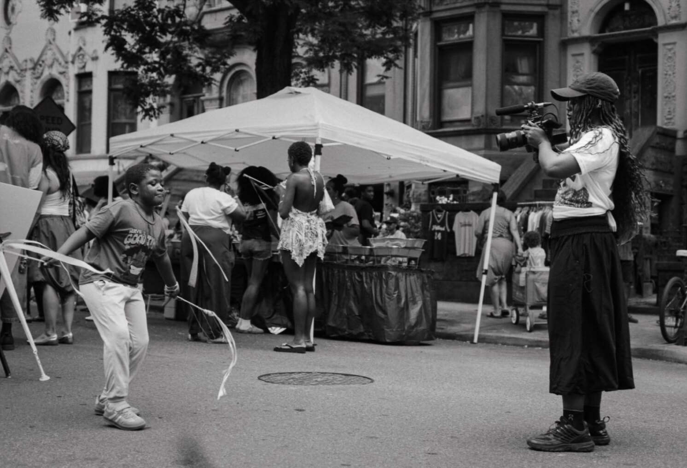
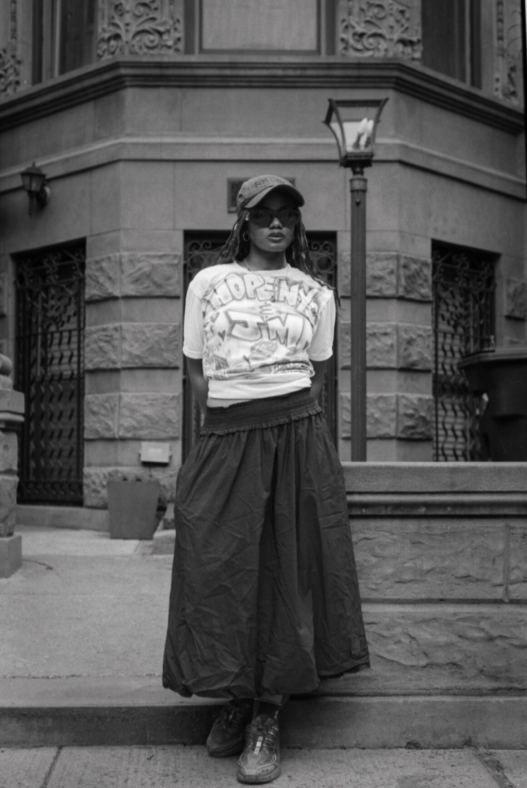
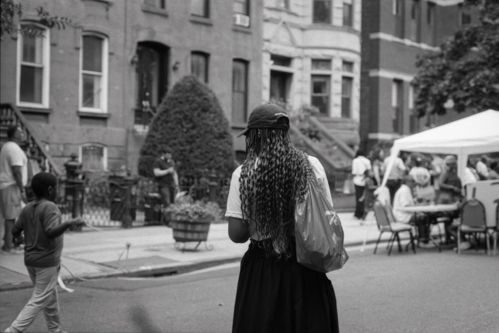
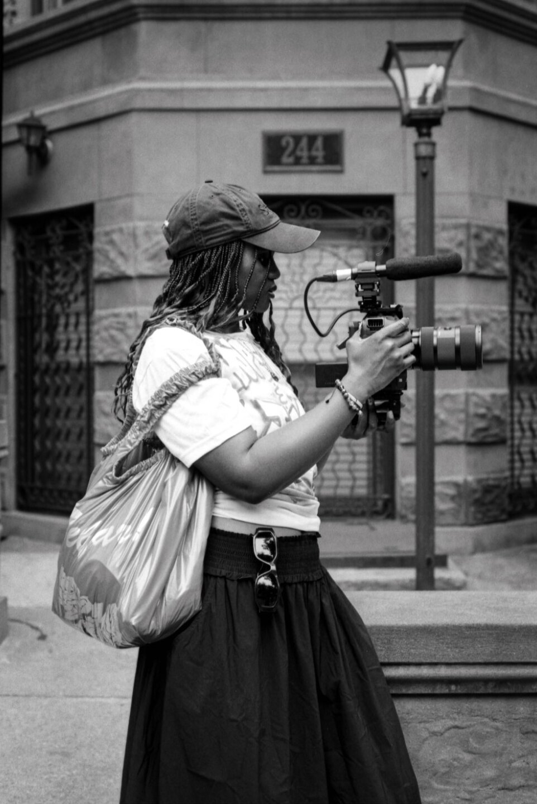

Q: The camera is how you interface with the world. Can you tell me about that?
I think the camera is an object, an objective vision. As a black woman, people always tend to think they know who you are, what you feel, or they dehumanize you.
But the camera is mechanic. It’s an object. And through the camera, I feel like I can be anybody. I can be the eye of anybody. I can observe anybody. And what does the camera provoke in people? It’s universal. Everybody’s moved by being filmed. Everybody is moved by seeing films. So in a sense, I feel like the camera — an electronic object — made me human, because through the camera I can film anybody, I can be everywhere, doing documentary, and that opened doors for me I could have never imagined.
It’s universal to want to leave something on earth when we are gone. So I feel like the camera, for me, is the most universal way to navigate life and the world.

Q: How do you decide what you’re going to capture?
I’m moved by what moves me. And even through my fiction work, I’m trying to capture the beauty and the fantasy of reality. So how do I choose? I choose through what’s coming to me, to be honest.
I love to film kids because when you look at kids, they perform for you. And that’s so beautiful, because they just want to be seen. So I love to film kids for that, because they’re so genuine — they perform for you, they’re happy to be filmed.
But for the rest, I’m trying to capture what moves me. Daily life, you know? The magic of going to the grocery store and all the lights, all the colors from the food and the cans — how it could be beautiful sometimes.

Q: What questions are you asking right now?
I’ll ask myself ‘am I doing enough of this life? Like, am I really 100% present in being a human?’ I’m always asking myself, am I doing enough? Am I enjoying enough? Am I caring enough towards other people? Am I 100% living the human life, you know?
Yeah, it’s nice to travel, but it’s also nice to take your kids every day to school. It’s part of the experience to take care of your health every day.

The mundane things are part of the experience.
So I’m trying to find beauty in the mundane, in the daily life things because you can’t always be at Coachella.
You can’t always be glamorous, but you have to wake up every day.
And every day is sometimes the same.
Sometimes different, but you just have to embrace that experience.
Q: If you could describe Johanna in one word, what would that word be?
Curious.